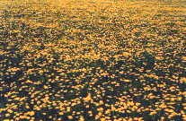
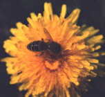
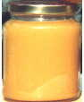

Il Taràssaco fiorisce in pianura nel mese di Aprile. E' chiamato in molti modi: Dente di Leone, Soffione, Radicella, ecc. Il suo nettare, raccolto dalle api viene trasformato in un miele dal sapore particolare e caratteristico, amarotico.
Cristallizza spontaneamente in tempi molto rapidi.


La medicina popolare attribuisce a questo miele proprietà epatoprotettive.